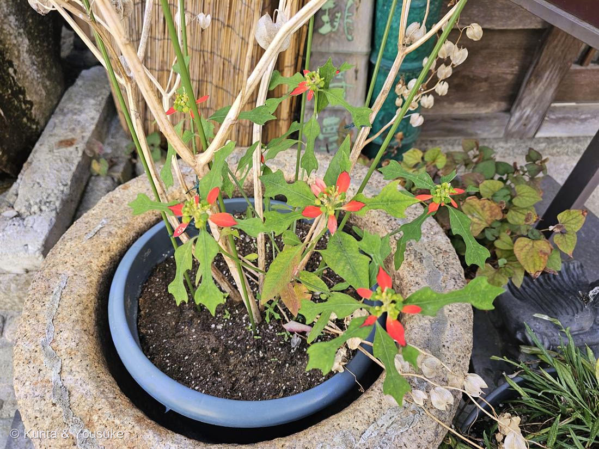

地図を読み込んでいるよ…
🔍 写真も地図も、押しているあいだ拡大して見られるよ（スマホは指を置いてすこし待ってね）。
🌍 の地図＝この子がもともと自生している場所を緑に。北〜南アメリカ（暖地で半野生化）。
⚠出典は「北〜南アメリカ」と広め。暖地で半野生化しているので、もとの故郷のふちははっきりしないよ。
⚠ 地図は国（日本と中国だけ県・省）までしか塗れないから、ほんとうの分布より広く見えていることがあるよ。地図はだいたいの場所。正確なところは、上の文を見てね。
ショウジョウソウ（猩々草）
Euphorbia cyathophora Murray
別名 · サマーポインセチア（夏のポインセチア）／旧 E. heterophylla var. cyathophora
トウダイグサ科 · Euphorbiaceae（トウダイグサ属）── 062 ハツユキソウと同属Euphorbia
燻太さんの言葉「赤と緑のコントラストが際立つ夏のポインセチアって感じ。葉っぱの形も剣みたいでかっこいい」……その二つが、そのまま名前だった
「夏のポインセチア」＝大正解、そして 062 の兄弟
- ⭐燻太さんの見立て「赤と緑のコントラストが際立つ、夏のポインセチアって感じ」＝そのままの名前。この子はサマーポインセチア（夏のポインセチア）として売られる、ショウジョウソウ（猩々草）。
- ⭐「トウダイグサ科なら、こっちも刺さるよね」＝大正解。062 ハツユキソウと同じトウダイグサ属（Euphorbia）。062＝白いふち／ポインセチア＝冬の赤／この子＝夏の赤——葉を色で染めて看板にする三兄弟。
- 和名猩々草＝赤い色を、赤い顔の霊獣「猩々（しょうじょう）」にたとえた。
⭐ 赤いのは「葉のつけ根」── 葉を旗にする（色はアントシアニン）
- ⭐花のまわりの苞葉（ほうよう）の“つけ根”が赤く色づく（ポインセチアは苞ぜんぶが赤いけれど、この子はつけ根に赤）。本当の花は地味だから、葉を赤く染めて、虫に見せる看板にしている＝025 ドクダミ・042 ハンゲショウ・048 カラー・062 ハツユキソウと同じ「葉を花の広告に使う」作戦の、赤バージョン。
- ⭐赤の正体はアントシアニン（007 シロツメクサ・023 ブルーベリー・039 スイフヨウと同じ色素の一族）。⭐ポインセチアの仲間は、「日が短くなる」と苞を赤くする（短日・光周性）ことで有名——光の長さを合図に、葉を色素で染める。→ 🎨「色でつながる」の小道へ。
⭐ 「剣みたいな葉」＝形がいろいろ（異形葉）
- ⭐燻太さんの「葉っぱの形も剣みたいでかっこいい」——よく見てる。この子は、同じ株に、細い剣型の葉・切れ込んだ葉・バイオリン型の苞葉が混じる（＝形のちがう葉が同居する「異形葉」）。
- 学名 cyathophora＝「杯状花序をつける」。⭐かつては Euphorbia heterophylla の変種とされ、heterophylla＝「葉の形がちがう」の意——まさに燻太さんが気づいた“葉の形いろいろ”が、昔の名前になっていた。（よく似た近縁ショウジョウソウモドキ E. heterophylla は、赤が少なく葉が細い。）
⭐ 燻太さんの問い ── なぜ、葉の形を変えるの？
- ⚠まず正直に：ショウジョウソウで「なぜ」を解いた研究は見つからなかった。だから「わかること・たぶん・謎」に分けて考える。じつは「葉の形が変わる」には、別々の3つが混ざっている。
- ① 葉 → 苞（看板）の分業＝はっきり狙いあり。上の赤い苞葉は虫を呼ぶ看板に特化、下のふつうの葉は光合成係。役割で形を分けている。
- ② 成長プログラム（heteroblasty）＝たぶん主役。株の下から上へ、葉の形もつき方（対生→互生→対生）も変わる。これは「時間割にそって形が変わる」発生の流れで、多くの植物がやること。⭐この場合、植物は葉を一枚ずつ設計しているのではなく、成長のタイマーを回しているだけ＝ちがう形は、その途中に自然に出る副産物のことが多い。
- 分子のダイヤル（燻太さんへ）：葉の切れ込みは KNOX1 の発現場所で決まる（葉で（再）発現→裂ける／AS1・AS2が抑える→単純葉）。生育相のタイマーは miR156→SPL。葉→苞の切り替えは花成・光周性のシグナル。「形を変える」＝この3つのダイヤルを、育ちながら回している。
- ⭐いちばん正直なところ：苞（赤い上の葉）は狙いあり（看板）。でも“ふつうの葉”の形ちがいには、証明された特別な狙いは、この植物では示されていない。葉の形そのものは機能を持つ（切れ込んだ葉は熱を逃がし、下葉に光を通す等）けれど、この子のばらつきが、その効果を狙って進化したという証拠は無い。——「ここまでわかる、ここから謎」と言えるのが、いちばん誠実。
062 と同じ「杯状花序」・暮らし
- 中心の緑のつぶつぶ＝杯状花序（cyathium）。062 ハツユキソウで見た、カップの中に花びらのない雌花1つ＋雄花4つの、あのトウダイグサ属の花。
- ⚠切ると白い乳液が出て、かぶれる（トウダイグサ科）。こぼれ種でよくふえる一年草（暖地では半野生化）。
名前と学名の由来 ── cyathophora＝「杯をもつ」
- ⭐属名 Euphorbia は、古代の医師エウフォルボスにちなむ。種小名 cyathophora は「杯（cyathium）をもつ」＝トウダイグサ科の、あの杯状花序のこと。学名が、この科の花のつくりを言っている。